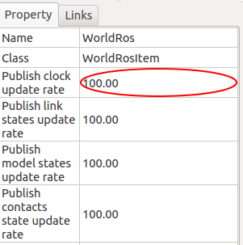
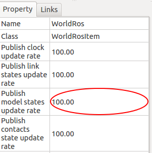
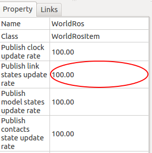
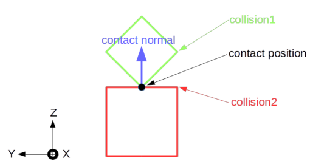
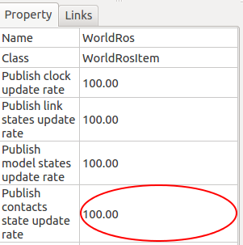

Choreonoid ROS Plugin Manual¶
Run¶
Enter following commands to run ROS plugin enabled Choreonoid.
$ roscore (on the different terminal)
$ choreonoid
You have to configure AISTSimulator item to use Foward dynamics mode or High-gain dynamics mode, create and place WorldRos item under the World item, create and place BodyRos item under the robot you want to control.
Also, in the case of Foward dynamics mode a create BodyRosTorqueController item and in the case of High-gain dynamics mode a create BodyRosHighgainController item.
Please refer to Choreonoid ROS Plugin Tutorial on details.
Note
The simulation time mode are currently supported.
Howerver, the wall-clock time mode are currently not supported.
Sorry, please use simulation time mode.
The simulation time mode details, please see http://wiki.ros.org/Clock
ROS Topics¶
Choreonoid ROS plugin provides following ROS topics, please refer to Choreonoid ROS Plugin Tutorial for actual use.
Note
Data type of sensor_msgs and geometry_msgs provides by the BodyRos item.
Data type of trajectory_msgs provides by the BodyRosTorqueContorller or BodyRosHighgainController item.
Other types are provides by the WorldRos item.
/[robotname]/joint_states¶
Each joint states are published to /[robotname]/joint_states topic.
Data type of joint_states topic is sensor_msgs::JointState.
/[robotname]/[controlmode]/set_joint_trajectory¶
Your control signal can be sent using /[robotname]/[controlmode]/set_joint_trajectory topic.
Data type of set_joint_trajectory topic is trajectory_msgs::JointTrajectory.
/[robotname]/[sensorname]¶
If there are sensors defined on the robot model, ROS plugin will generate topics correspond to each sensor.
Output from force sensors are published using data type geometry_msgs::Wrench.
Output from gyro sensors are published using data type sensor_msgs::Imu.
Output from accel sensors are published using data type geometry_msgs::Accel.
Output from range sensors are published using data type sensor_msgs::LaserScan.
Output from vision sensors are published using image transport.
For RGBD vision sensors, depth image is published in sensor_msgs::PointCloud2 data type as well.
/clock¶
Current simulation time is published to /clock topic.
This topic publish are made at a cycle (Hz) specified by the user.
The cycle default setting are 100.0 Hz.
/choreonoid/model_states¶
Current position and attitude of models are published to this topic.
This topic publish are made at a cycle (Hz) specified by the user.
The cycle default setting are 100.0 Hz.
/choreonoid/links_states¶
Current position and attitude of links in models are published to this topic.
This topic publish are made at a cycle (Hz) specified by the user.
The cycle default setting are 100.0 Hz.
/choreonoid/[worldname]/physics/contacts¶
Current contact state of links in models are published to this topic.
The output are published using data type gazebo_msgs::ContactState.
It is decribed below summary each parameter of the topic.
info:
Simulation world name and time of contact (simulation time) will be output to this.
collision1_name:
collision2_name:
The link name where contact occurred is output to this. This output format is ‘<body name>::<link name>::collision’.
wrenches:
It outputs force and torque generated at each contact position. This output is the value around center of mass in collision1_name links. The relationship between wrench and contact position is linked with position of array.
total_wrench:
It outputs sum of forces and torques
contact_positions:
It outputs the contact position in world coordinates.
contact_normals:
It outputs the contact noraml.
The relationship between contact normal and contact position is linked with position of array.
depths:
It outputs penetration depth. The relationship between depth and contact position is linked with position of array.
This topic publish are made at a cycle (Hz) specified by the user.
The cycle default setting are 100.0 Hz.
ROS Services¶
Following ROS services are provided to control the simulation.
Note
All services are provides by the WorldRos item.
/choreonoid/pause_physics¶
Takes no argument. Pause the simulation.
/choreonoid/unpause_physics¶
Takes no argument. Continue the paused simulation.
/choreonoid/spawn_vrml_model¶
Takes [model_name, model_data, namespace, pose, reference_frame] as arguments. Load the specified model to the simulation.
/choreonoid/delete_model¶
Takes [model_name] as an argument. Delete the specified model from the simulation.